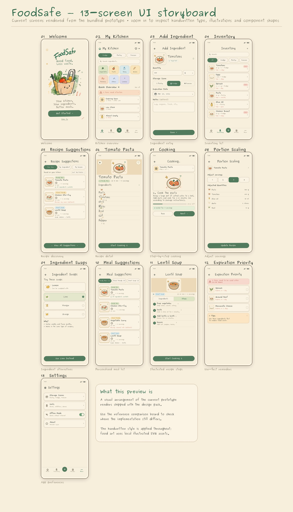

THE FOODSAFE UI PROJECT
FoodSafe
Good food. Less waste. A handwritten, illustrated kitchen companion—built from your reference mockup.
Open the preview first, then explore the implementation and measurement files.

Open the project
Important: this is a browser design/prototype pack, not an installable iOS `.ipa` or Xcode app project. The UI demo runs locally and needs no package installation.